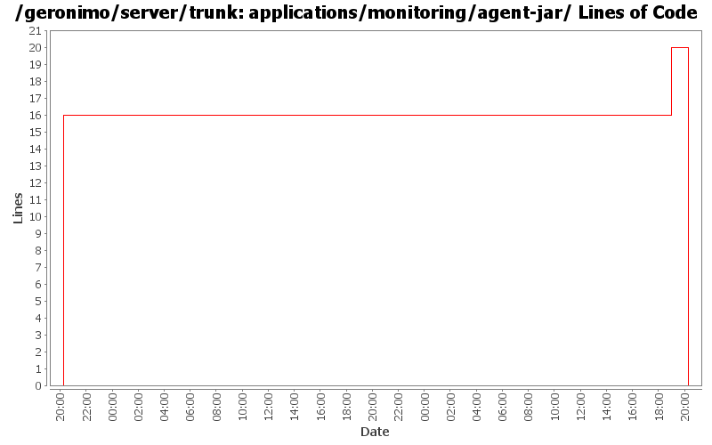

[root]/applications/monitoring/agent-jar
src
(0 files, 0 lines)
main
(0 files, 0 lines)
java
(0 files, 0 lines)
org
(0 files, 0 lines)
apache
(0 files, 0 lines)
geronimo
(0 files, 0 lines)
monitoring
(0 files, 0 lines)
snapshot
(0 files, 0 lines)

| Author | Changes | Lines of Code | Lines per Change |
|---|---|---|---|
| Totals | 7 (100.0%) | 36 (100.0%) | 5.1 |
| jdillon | 4 (57.1%) | 20 (55.6%) | 5.0 |
| ecraig | 3 (42.9%) | 16 (44.4%) | 5.3 |
(GERONIMO-3747) Moved applications/* to plugins/*
0 lines of code changed in 3 files:
(GERONIMO-3747) Fixed parentage of module groups, though most still need to have their modules put into the proper groupId
Updated groupId of *everything* under framework/** to org.apache.geronimo.framework, and did my best to update all references
20 lines of code changed in 1 file:
GERONIMO-3766: monitoring agent should be separated into mejb, jmx, and jar utility classes \n Patch by Viet Nguyen
16 lines of code changed in 3 files: